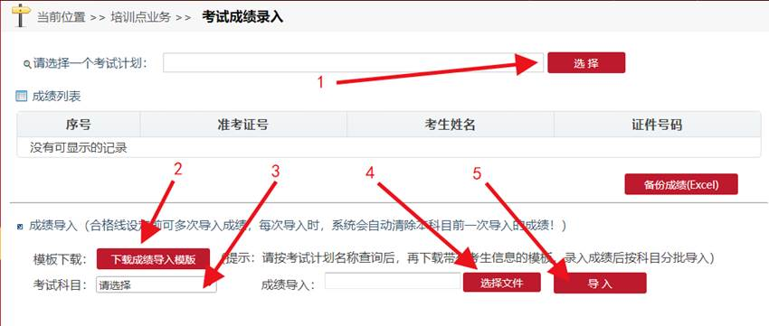
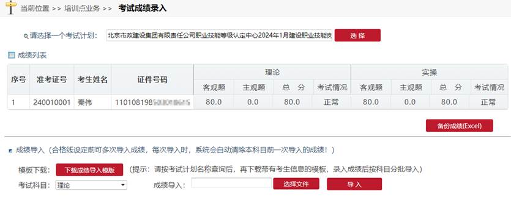
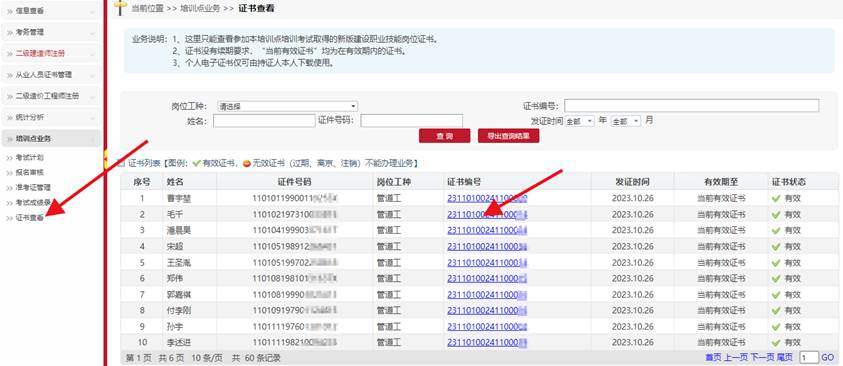

进入考试成绩录入页面

1、 选择一个考试计划，列表显示该考试计划所有分配准考证的考生信息。
2、 点击下载成绩导入模板，下载带有考生信息的成绩导入模板。（理论和实操考试使同一个一个模板，但成绩分两个文件保存）录入成绩保存待用。
3、 选择考试科目（理论或实操），分两次导入成绩。
4、 选择已经录好成绩的文件。
5、 点击导入成绩录入到系统中。

注意：如果没有主观题，可录入0分。
成绩录入完毕后市住建委注册中心业务人员负责约定的参数设置合格线，公告成绩，发放电子证书。
培训点可在证书查页面查询市住建委已经放号的电子证书信息
